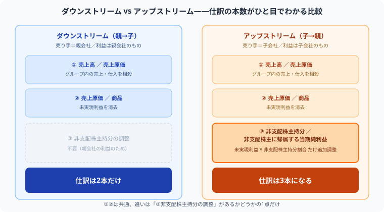

簿記1級の成果連結とは？
未実現利益の消去をアップ・ダウンストリームで解説
簿記2級の連結会計は「資本連結」（親会社の投資と子会社の資本を相殺する）が中心でした。1級ではここに「成果連結」——グループ内の取引そのものを、まるでなかったことのように消していく処理——が加わります。中でも「未実現利益の消去」は、多くの1級受験生が最初につまずくポイントです。この記事では、丸暗記ではなく「なぜその仕訳になるのか」から整理します。なお、そもそも連結会計と企業結合会計の違いがまだ曖昧な方は、先にそちらを読むと理解がスムーズです。
資本連結との違い——「状態」を整理するか「取引」を消すか
| 区分 | 目的 | タイミング |
|---|---|---|
| 資本連結 | 親会社の投資と子会社の資本を相殺する | 毎期の連結決算のたびに（取得時の金額を「開始仕訳」として繰り返す） |
| 成果連結 | グループ内取引・そこから生じた未実現利益を消す | 毎期の連結決算のたびに（その期の取引をもとに毎回計算し直す） |
2級で学んだ資本連結も、実は毎期の連結決算のたびに繰り返す処理です。ただし取得時に決まった金額をそのまま「開始仕訳」として毎回持ち越すだけなので、実質的には1回整理した内容の繰り返しに近い形になります。一方の成果連結は、「今期グループ内でどんな取引があったか」を毎回新しくチェックして消していく作業です。
ダウンストリームとアップストリーム——「誰が売ったか」で処理が変わる

グループ内取引には、必ず「売り手」と「買い手」がいます。この売り手が親会社か子会社かによって、呼び方と処理の一部が変わります。
| 用語 | 売り手 | 買い手 | 利益は誰のもの？ |
|---|---|---|---|
| ダウンストリーム | 親会社 | 子会社 | 親会社の利益 |
| アップストリーム | 子会社 | 親会社 | 子会社の利益（非支配株主にも一部帰属） |
この「利益は誰のものか」という点が、後で説明する非支配株主持分への影響の有無を決める、最大のポイントです。
未実現利益とは何か
グループ内で商品を売買すると、売った側には「利益」が発生します。しかしその商品が期末時点でまだ買った側の在庫として残っている（＝グループの外部にまだ売れていない）場合、グループ全体で見ればまだ何も実現していません。この、グループ内だけで生まれた「まだ外部に売れていない利益」を未実現利益といい、連結財務諸表からは消去します。
ダウンストリームの例題——親会社が売り手のケース
まず、グループ内の売上・仕入そのものを相殺します。
| 借方 | 金額 | 貸方 | 金額 |
|---|---|---|---|
| 売上高 | 1,000 | 売上原価 | 1,000 |
次に、この商品に含まれている未実現利益（1,000円 − 800円 ＝ 200円）を消去します。連結上の商品（棚卸資産）は、グループにとっての原価800円で評価し直す必要があるからです。
| 借方 | 金額 | 貸方 | 金額 |
|---|---|---|---|
| 売上原価 | 200 | 商品 | 200 |
アップストリームの例題——子会社が売り手のケース
グループ内の売上・仕入の相殺、未実現利益の消去そのものは、ダウンストリームと全く同じ仕訳です。
| 借方 | 金額 | 貸方 | 金額 |
|---|---|---|---|
| 売上高 | 1,000 | 売上原価 | 1,000 |
| 売上原価 | 200 | 商品 | 200 |
ここまでは同じですが、アップストリームではもう1つ仕訳が必要です。この200円の利益は子会社S社が生み出した利益なので、本来は非支配株主にもその20%（40円）が帰属するはずでした。利益を消去した以上、非支配株主に帰属する取り分も同じ割合だけ減らす必要があります。
| 借方 | 金額 | 貸方 | 金額 |
|---|---|---|---|
| 非支配株主持分 | 40 | 非支配株主に帰属する当期純利益 | 40 |
この仕訳で、貸借対照表上の非支配株主持分（純資産）を40円減らし、損益計算書上で非支配株主に配分される利益も40円減らします。結果として、未実現利益200円の消去のうち、160円は親会社株主に帰属する当期純利益から、40円は非支配株主持分・非支配株主に帰属する当期純利益から、それぞれ正しく減額されます。
期末在庫が一部だけ残っている場合
実際の試験では、グループ内で仕入れた商品の全部ではなく、一部だけが期末在庫として残っているケースも頻出です。この場合、未実現利益は「期末在庫に含まれる分」だけを消去します。
「売上高1,000円・原価800円」の場合、利益率は20%（200円 ÷ 1,000円）です。もし期末在庫として残っているのが全額ではなく600円分（売価ベース）だけなら、未実現利益は600円 × 20％ ＝ 120円になります。
よくあるミス
- ダウンストリームなのに非支配株主持分の調整仕訳を書いてしまう（親会社の利益には非支配株主は関与しない）
- アップストリームで非支配株主持分の調整を忘れる
- 期末在庫が一部だけ残っているのに、取引額全体に利益率を掛けてしまう
- 資本連結の「開始仕訳」（取得時からの累積仕訳）を毎期繰り返すのを忘れ、その期の成果連結だけで連結財務諸表を作ろうとしてしまう
勉強の順番
- 2級の資本連結（連結会計とは？連結修正仕訳とのれん）を復習し、「状態の整理」との違いを意識する
- ダウンストリーム・アップストリームの見分け方（売り手が誰か）を固める
- 未実現利益の消去仕訳（売上高／売上原価、売上原価／商品）を反復する
- アップストリームの場合の非支配株主持分の調整仕訳を追加する
- 期末在庫が一部のみ残るパターン、固定資産の未実現利益消去など応用へ進む
まとめ
- 成果連結は、グループ内取引と未実現利益を毎期消去する処理
- 資本連結（状態の整理）とは目的・タイミングが異なる
- 売り手が親会社ならダウンストリーム、子会社ならアップストリーム
- ダウンストリームは非支配株主持分の調整が不要、アップストリームは必要
- アップストリームの調整額は「未実現利益 × 非支配株主持分割合」で計算する
簿記の実力は、問題を1つ解くたびに確実に積み上がっていきます。
この記事が少しでも参考になったら、この下にある【いいねボタン】をポチッと押してもらえると、めちゃくちゃ嬉しいです！ そして、Study Questで今日の学習時間を記録して、合格までの成長を「見える化」していきましょう。